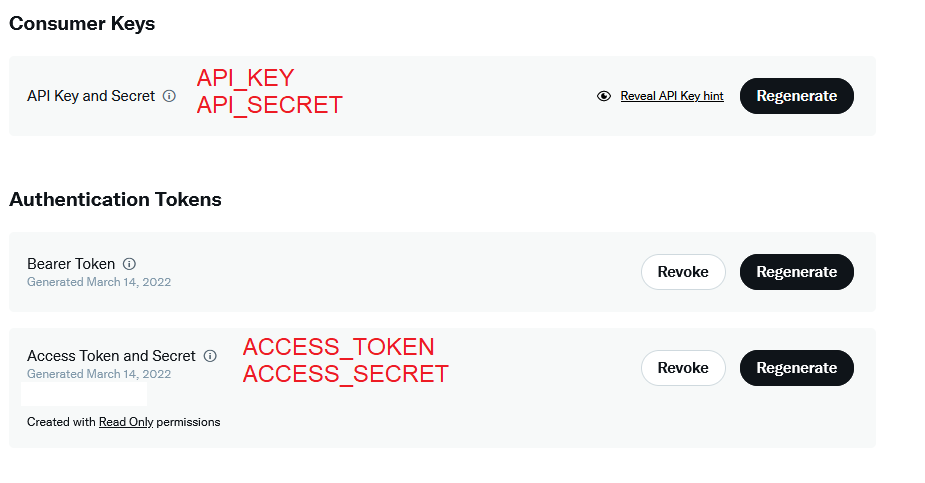

Block all Twitter advertising accounts from your timeline. (15.03.2022)
Notice
As of March 31, 2023, this method is not a good way of blocking Advertising on Twitter; you should just use something like uBlock Origin or alternative Apps.
Requirements
For following this Guide, you need the following:
- a Twitter Developer Account Your Twitter Data Archive](https://twitter.com/settings/download_your_data)
- the program
- Python3 and pip3
Program Setup
Let's start by getting the Program set up.
First, we need to install the requirements by running
pip3 install -r requirements.txt --user
After that, you need to copy the .env.example file to .env
Now you have to get your Twitter Developer Credential and fill it in the .env file.
API_KEY=""
API_SECRET=""
ACCESS_TOKEN=""
ACCESS_TOKEN_SECRET=""
You have to get them on the Twitter Developer Site > your App > Keys and Tokens: 
Twitter Data
Now get your Twitter Data Archive from here
After you have requested the Archive wait for the Notification Email. (This can take hours to days!)
Unpack the archive into the folder called export.
The directory structure should look like this now:
- export
- assets
- data
- .gitkeep
- Your archive.html
- .env
- main.py
...
Get the List
Now you just must run: ```bash python3 main.py
The script will output a file called ```export.csv``` and tell you how many Advertising Accounts you have seen. For me, it was around 750 Accounts, but in this example, I will use a list of 3 Accounts.
## Block the Accounts
To Block the accounts, you need to upload the ```export.csv``` content to [Pastebin](https://pastebin.com) or another site.
Paste the contents ```export.csv``` in the input field and click ```create Paste```.

Now you are redirected to your paste. Click on ```raw``` and copy the link.

Now go to this site: [https://twitter-blocklist-auth.glitch.me/](https://twitter-blocklist-auth.glitch.me/) and log in.
Now you can paste the URL you have copied before in the field and click Submit.

After that, the Page will tell you how many Accounts got blocked.

### archive
The following links are archived versions, as the main ones could break.
[https://ublockorigin.com/](https://web.archive.org/web/20240519173755/https://ublockorigin.com/)
[https://developer.twitter.com/](https://web.archive.org/web/20221030110754/https://developer.twitter.com/en)
[https://github.com/Nickwasused/twitter-data-export-to-blocklist](https://web.archive.org/web/20240519173959/https://github.com/Nickwasused/twitter-data-export-to-blocklist)
[https://www.python.org/](https://web.archive.org/web/20240519112608/https://www.python.org/)
[https://pastebin.com](https://web.archive.org/web/20240519105333/https://pastebin.com/)
[https://twitter-blocklist-auth.glitch.me/](https://web.archive.org/web/20240308204003/https://twitter-blocklist-auth.glitch.me/) Back to top